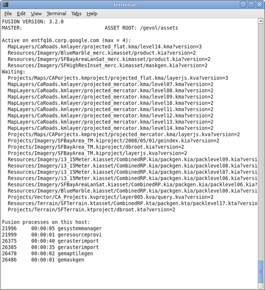

Monitor system processes¶
You can watch all active Google Earth Enterprise Fusion system
tasks and processes using the getop command. This command is
similar to the Unix command top, but is specific to Google
Earth Enterprise Fusion processing. It is the command line
equivalent to the System Manager in the Google Earth Enterprise
Fusion GUI. See getop for more information.
The getop command outputs the following data for the
workstation to the console:
- Version of Google Earth Enterprise Fusion running
- Host name of the master
- Currently selected asset root
- The active process and maximum number of jobs allowed (max = n)
- List of processes waiting to run
- Process IDs, running time, and names of all Google Earth Enterprise Fusion processes running
For example, the output might look something like this:
